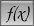
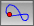
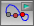

| 文字を追加する | |
 | 関数を定義する |
 | 軌跡 |
 | アニメーション |
Page last modified on Saturday 09 of February, 2008 [12:58:27 UTC].
The original document is available at
http://doc.cinderella.de/tiki-index.php?page=Special%20ModesJ